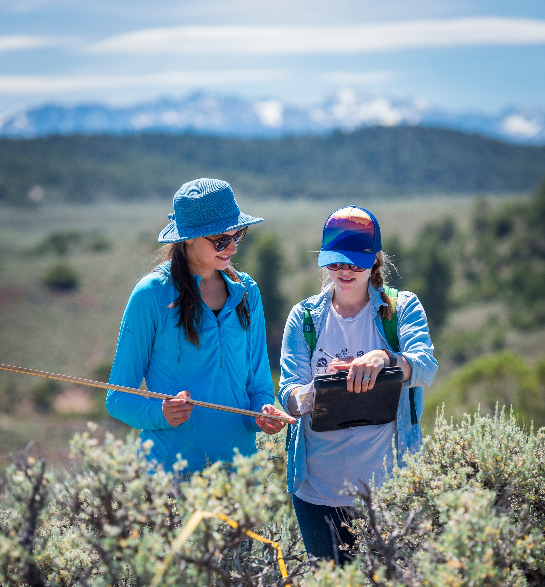

Field Notes
Field notebooks and datasheets are an essential tool for recording information in the field that is eventually uploaded into a database. They can also serve as hard-copy evidence or a primary source in the event of a data entry error or some other case of confusion. Field notebooks and datasheets should be scanned after each day/trip in the field. A digital copy can serve as a backup in the event of a lost or damaged field notes.